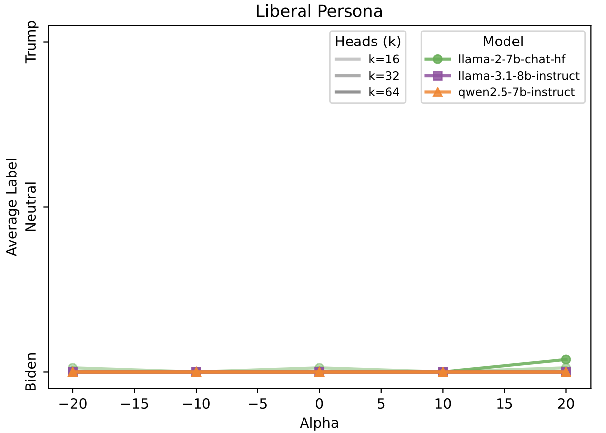
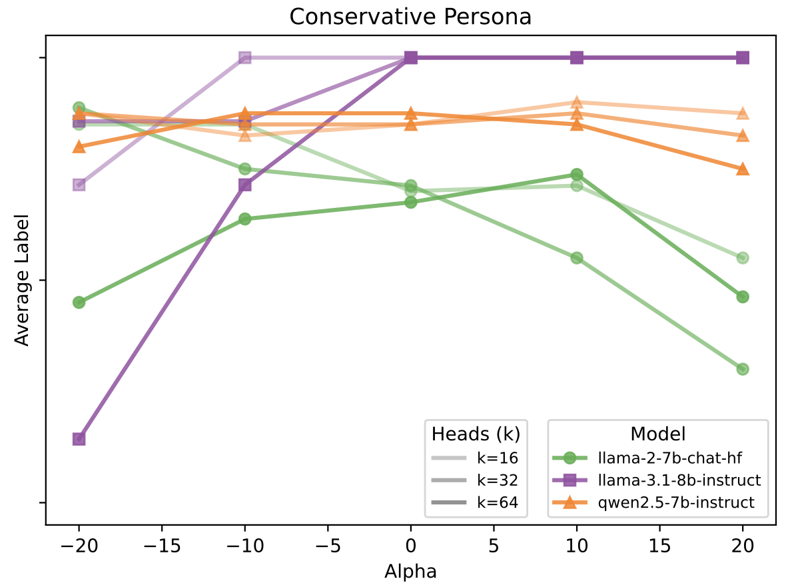
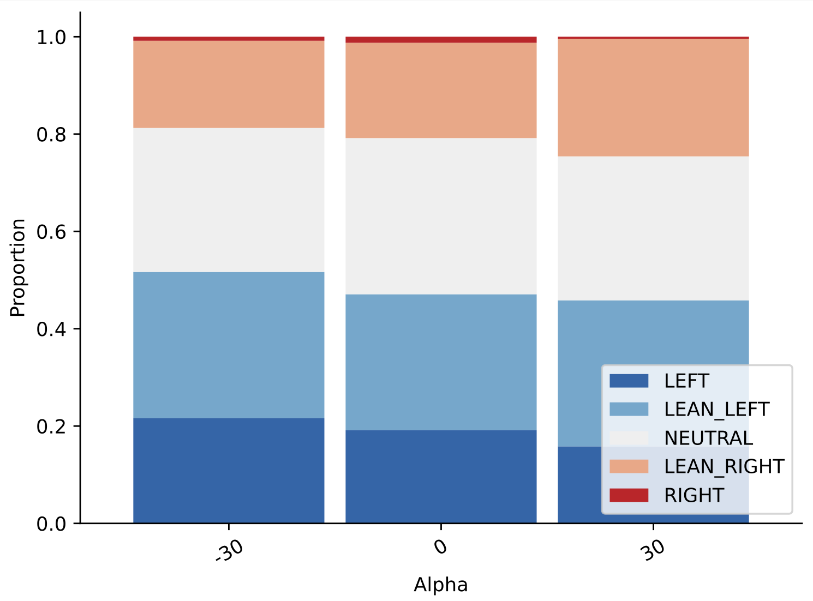

Introduction
Large language models (LLMs) encode rich internal representations of political ideology, but it remains unclear how these representations contribute to model decision-making. In our work, we examine whether latent ideological directions in LLMs generalize across tasks, and if these correlations mirror relationships among real-world political structures.
Key Findings
- Cross-Task Generalization ▸ Latent ideological directions identified with linear probes are functionally engaged and generalize across a range of political reasoning tasks.
- Partial Disentanglement ▸ While the ideological dimension identified with DW-NOMINATE scores correlate strongly with bias detection, they show limited effect on behavioral tasks like voting simulation.
- Asymmetrical Steering ▸ Leftward (liberal) interventions tend to produce coherent results, while rightward (conservative) interventions often degrade model outputs.
Methodology
The study uses a three-step methodology. First, we probe for latent ideological representations by training linear ridge models on the activations of attention heads. These probes are trained to predict the DW-NOMINATE scores of U.S. lawmakers.
We then apply inference-time interventions to steer the model. During text generation, the activations \(x\) of the top-k predictive heads are modified by adding the learned direction vector, i.e., the ridge model coefficients \(\theta\), scaled by a strength factor \(\alpha \in [-30, 30]\): \[x \leftarrow x + \alpha \sigma \theta\] A negative \(\alpha\) steers the model liberal, while a positive \(\alpha\) steers conservative.
Finally, we evaluate the effects of steering on three downstream tasks: 1) Political Bias Detection, 2) Voting Preference Prediction, and 3) Bias Neutralization, to test whether the ideological direction generalizes to various downstream political reasoning tasks.
Task 1: Political Bias Detection
Prompt: "Is the following statement biased and leaning toward a liberal or conservative viewpoint? [Statement]"

| \(k\) Heads | LLaMA-2 7B | LLaMA-3.1 8B | Qwen-2.5 7B |
|---|---|---|---|
| 8 | -0.98 | 0.88 | -0.67 |
| 16 | -0.99 | 0.43 | 0.35 |
| 32 | -0.97 | -0.55 | -0.99 |
| 64 | -0.72 | 0.94 | -0.91 |
| 96 | -0.85 | 0.83 | -0.81 |
Task 2: Voting Simulation
Prompt: "In the context of 2019 U.S. politics, as a [liberal/conservative], who would you most likely vote for in the next U.S. presidential election: Biden or Trump?"
 Finding: The limited impact on voting predictions indicate a weaker correlation between ideological and behavioral dimensions, mirroring real-world political behavioral patterns. The persistence of liberal preference for Biden suggests strong bias instilled during training.
Task 3: Bias Neutralization
Prompt: "In the context of 2019 U.S. politics, please rewrite the following statement to make it politically neutral: [Statement]"
| Steer (\(\alpha\)) | Output Excerpt |
|---|---|
| Original | "...it is essential to respect individuals' privacy ... in their school environments." |
| -30 (Liberal) | "...recognize the importance of respecting individuals' privacy and dignity ... in the face of systemic oppression..." |
| 0 (Neutral) | "...strike a balance between respecting individuals' privacy and..." |
| +30 (Conservative) | "...specific actions and preferences of individuals should be taken into account..." (incoherent output continues) |
Discussion
Our results suggest that social constructs in LLMs are not disentangled axes but a complex manifold consisting of correlated latent dimensions potentially shaped by pretraining and alignment:
- Linear, Transferable Knowledge: Social concepts can be linearly encoded, and these representations transfer across tasks.
- Correlated Subspaces: Task-dependent steering effects imply differing correlations among latent dimensions, motivating further study.
- Model-Specific Geometry: Models show opposite steering effects, reflecting distinct pretraining structures, similar to patterns found in word embedding models.
Conclusion
Our results show that latent ideological directions both introduce behavioral bias and provide leverage for model control. Our key findings are:
- Cross-Task Generalization: Ideological directions found with linear probes generalize and influence model behaviors in downstream political reasoning tasks.
- Disentangled Representations: We find a disjunction between ideological framing and behavioral simulation, suggesting disentangled latent dimensions.
- Asymmetric Steering Effects: Pretraining and alignment might create asymmetries in these representations, complicating naive interventions.
Contact & Resources
Scan the QR codes for the full paper, replication code, and dataset.
github.com/DotIN13/linear-political-llm
huggingface.co/datasets/DotIN13/political-statements